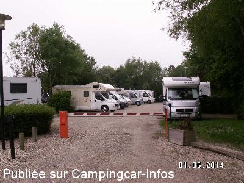
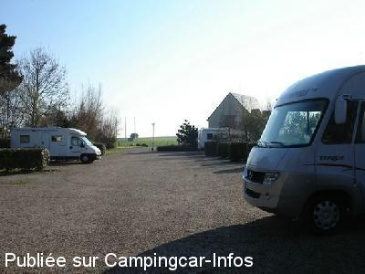
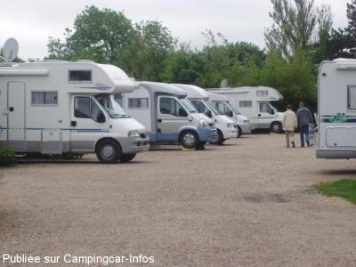

APCC = parkings réservés camping-cars sans services de :
VEULES LES ROSES
(N° 833)
Accès/adresse :
Avenue Jean Moulin
76980 VEULES LES ROSES
76980 VEULES LES ROSES
Latitude : (Nord) 49.87589° Décimaux ou 49° 52′ 33′′
Longitude : (Est) 0.80297° Décimaux ou 0° 48′ 10′′
Tarif : 2015
Stationnement : 10 €
Services :

Accès aux sanitaires, piscine du camping
Autres informations :
Ouvert d'avril à novembre
16 emplacements à l'intérieur du camping
Stationnement limité 24 H

Le 25/08/2014 par Gilles Boucart

Le 01/04/2007 par RW

Le 27/05/2006 par PAPY538
de
le 24/07/2015 :
bonjour plus de borne pour aire, mais pour 10 euro le camping autorise l'accès aux douche et toilette du camping
bonjour plus de borne pour aire, mais pour 10 euro le camping autorise l'accès aux douche et toilette du camping
de
Gilles
le 25/08/2014 :
Passer la nuit du 31/05 au 01/06/2014.
Une barrière a l'entrée de l'aire de camping-cars, il faut d'abord aller régler au bureau d'accueil qui nous remet un badge électronique pour ouvrir la barrière en échange d'une pièce d'identité.
Au départ votre pièce d'identité vous est rendue en échange du badge.
Passer la nuit du 31/05 au 01/06/2014.
Une barrière a l'entrée de l'aire de camping-cars, il faut d'abord aller régler au bureau d'accueil qui nous remet un badge électronique pour ouvrir la barrière en échange d'une pièce d'identité.
Au départ votre pièce d'identité vous est rendue en échange du badge.